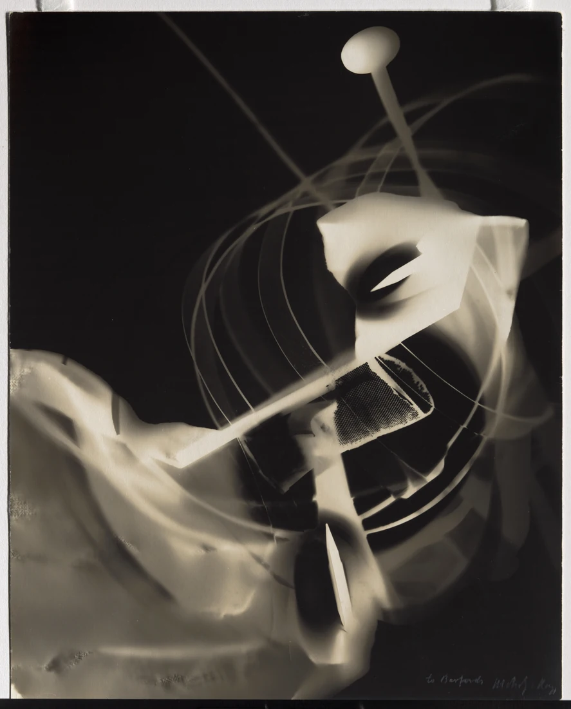
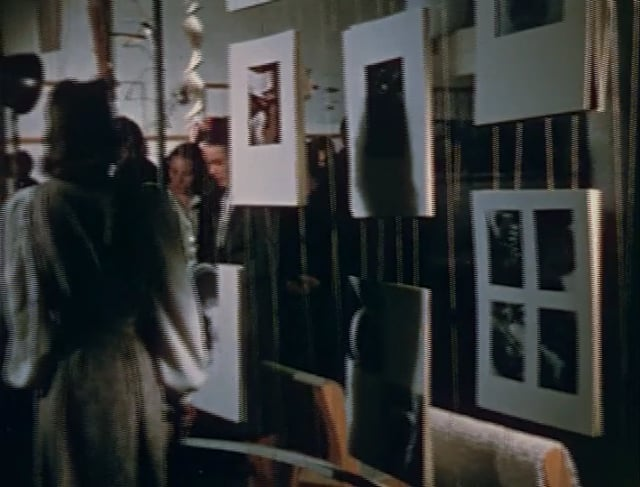
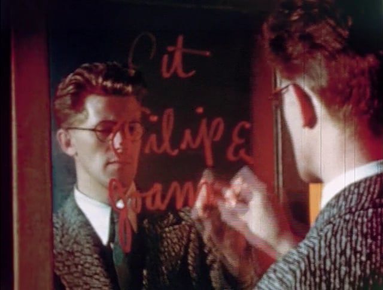

見るポイント
右上の小さな白い円と、左下に広がる薄い影を見比べてください。輪郭がくっきりした所と、光に溶けていく所が一枚の印画紙に並んでいます。
作品・制作の例6件を紹介しています。図版で紹介する作品は3作品。実作品図版3点、AAGA模写（Runway制作）0点。
学校・教育。後継校への変化は時期を分けて扱う
New Bauhaus Chicago
ニュー・バウハウスは、1937年にアメリカのシカゴにできた学校です。
モホリ＝ナジは、ドイツのバウハウスでの経験をもとに、材料や光を使って試す学びを大切にしました。
紙を切ったり折ったり、光の当て方を変えたりすると、何が見つかるでしょう。
ここでは、学校の学び方を伝える資料を、後の学校のものとは時期を分けて紹介します。
実作品を見る

画像を表示できませんでした。下の出典ページで確認できます。
ラースロー・モホリ＝ナジ / 1940年頃
ゼラチン・シルバー・プリント（フォトグラム）。縦50.1 × 横40.2センチ。 ／ シカゴ美術館、作品番号1968.264（ジョージ・バーフォード夫妻寄贈）
右上の小さな白い円と、左下に広がる薄い影を見比べてください。輪郭がくっきりした所と、光に溶けていく所が一枚の印画紙に並んでいます。
シカゴ校の教員ジョージ・バーフォードに贈られた一枚で、同校の写真教育をたどる展覧会『Taken by Design』の図版第1番に選ばれました。
撮影・図版制作 フォトグラム制作はラースロー・モホリ＝ナジ。図版の複写担当者名は財団の台帳に記載されていません。
原作・ラースロー・モホリ＝ナジ。シカゴ美術館所蔵（George and Ruth Barford 寄贈）。図版出典・モホリ＝ナジ財団 www.moholy-nagy.org 。© Artists Rights Society (ARS), New York / VG Bild-Kunst, Bonn。
出典で作品・資料を見る ↗モホリ＝ナジ財団の非営利の教育・批評利用に関する方針に基づく掲載
財団は、非営利の教育・批評を目的に作者の作品画像を用いる際、別記がない限り個別の許可を要しないとしています。
財団の作品目録が公開する複写図版を用い、シカゴ校の写真実習と光の見方を解説しています。
シカゴ美術館は、暗室での共同作業か授業の見本だった可能性を挙げています。どちらだったかは確定していません。
出典先の原画像を開く ↗作品・図版の関連資料 ↗画像の利用条件 ↗原図全体を保ち、解説用に縮小してWebPに変換しました。一覧には財団の縮小画像を使用しています。
実作品を見る

画像を表示できませんでした。下の出典ページで確認できます。
ラースロー・モホリ＝ナジ（監督・撮影） / 1944年
カラー映画、36分11秒（財団公開版）。掲載図版は映画の一場面。 ／ モホリ＝ナジ遺産管理団体所蔵
右手前の台紙には、小さな写真が四つ並びます。その左には一枚だけを大きく見せる台紙があります。人が歩く通路からどう見比べられるか、台紙の大きさと間隔に注目してください。
モホリ＝ナジ自身がシカゴ校の実習を映画に記録しました。シカゴ・フィルム・アーカイブズは、この学校が手がけた映画を紹介する上映会で本作を取り上げています。
撮影・図版制作 映画撮影はラースロー・モホリ＝ナジ。図版は同作の画面。
図版提供元・モホリ＝ナジ財団（The Moholy-Nagy Foundation／www.moholy-nagy.org）。財団の公式作品目録に掲載された映画抜粋の静止画。
出典で作品・資料を見る ↗モホリ＝ナジ財団の非営利の教育・批評利用に関する方針に基づく掲載
財団は、この映画をモホリ＝ナジの作品目録に収録し、非営利の教育や批評での作品画像利用は、別記がない限り個別の許可を要しないとしています。
財団の作品目録が表示に使用する公式の静止画を、作品の見方を解説するために掲載。利用方針 https://www.moholy-nagy.org/rights-reproduction/
1938年に閉じた初代校を引き継いだ、シカゴのデザイン学校の授業と作品を記録した映画です。
出典先の原画像を開く ↗作品・図版の関連資料 ↗画像の利用条件 ↗元のJPEGを加工せずに掲載しています。
実作品を見る

画像を表示できませんでした。下の出典ページで確認できます。
ラースロー・モホリ＝ナジ（監督）、シカゴのインスティテュート・オブ・デザイン映画クラスの学生（脚本・撮影・編集） / 1945年
カラー映画、約19分。掲載図版は映画の一場面。 ／ ライト・コーン（パリ）が16ミリ上映用フィルムを管理。原版の所蔵先は財団の作品台帳に記載されていません。
赤い文字をたどってから、鏡に映った顔を見てください。文字がある面と、奥に見える顔が重なります。ひとつの画面の中で、手前と奥の見え方が入れ替わります。
学生が脚本・撮影・編集を担った授業作品です。研究書『Art as Organism』は複数の場面を図版で取り上げ、シカゴ美術館附属美術大学の映画プログラムでも上映されました。
撮影・図版制作 撮影はシカゴのインスティテュート・オブ・デザイン映画クラスの学生。個人名は掲載資料に記載されていません。
図版提供元・モホリ＝ナジ財団（The Moholy-Nagy Foundation／www.moholy-nagy.org）。財団の公式作品目録に掲載された映画抜粋の静止画。
出典で作品・資料を見る ↗モホリ＝ナジ財団の非営利の教育・批評利用に関する方針に基づく掲載
財団は、この映画をモホリ＝ナジの作品目録に収録し、非営利の教育や批評での作品画像利用は、別記がない限り個別の許可を要しないとしています。
財団の作品目録が表示に使用する公式の静止画を、作品の見方を解説するために掲載。利用方針 https://www.moholy-nagy.org/rights-reproduction/
1944年に名称が変わった後継校インスティテュート・オブ・デザインの授業作品です。
出典先の原画像を開く ↗作品・図版の関連資料 ↗画像の利用条件 ↗元のJPEGを加工せずに掲載しています。
学校の教育資料
同心円の教育課程の図を通じてグロピウスのモデルとの関係を説明する機関展示。図形の似た個人作品より学校との関係が具体的
作品・資料の出典を見る ↗作品名（出典表記）：The New Bauhaus: Course Curriculum
László Moholy-Nagy（ラースロー・モホリ＝ナジ） / 1936/1937（機関展示の年代表記） / 学校の教育資料
ゼラチン・シルバー・プリント（フォトグラム）。縦50.1 × 横40.2センチ。
右上の小さな白い円と、左下に広がる薄い影を見比べてください。輪郭がくっきりした所と、光に溶けていく所が一枚の印画紙に並んでいます。
作品・資料の出典を見る ↗原題：Untitled
ラースロー・モホリ＝ナジ / 1940年頃 / ゼラチン・シルバー・プリント（フォトグラム）。縦50.1 × 横40.2センチ。
学生制作・光の実験
イリノイ工科大学自身の展示が、実験教育の節に1941年の学生制作として提示する。光を材料として扱う学びを知る資料。
作品・資料の出典を見る ↗作品名（出典表記）：Wiremesh Pillow, Light Modulator
Georgianna Green（ジョージアナ・グリーン） / 1941 / 学生制作・光の実験
カラー映画、36分11秒（財団公開版）。掲載図版は映画の一場面。
右手前の台紙には、小さな写真が四つ並びます。その左には一枚だけを大きく見せる台紙があります。人が歩く通路からどう見比べられるか、台紙の大きさと間隔に注目してください。
作品・資料の出典を見る ↗原題：Design Workshops
ラースロー・モホリ＝ナジ（監督・撮影） / 1944年 / カラー映画、36分11秒（財団公開版）。掲載図版は映画の一場面。
カラー映画、約19分。掲載図版は映画の一場面。
赤い文字をたどってから、鏡に映った顔を見てください。文字がある面と、奥に見える顔が重なります。ひとつの画面の中で、手前と奥の見え方が入れ替わります。
作品・資料の出典を見る ↗原題：Do Not Disturb
ラースロー・モホリ＝ナジ（監督）、シカゴのインスティテュート・オブ・デザイン映画クラスの学生（脚本・撮影・編集） / 1945年 / カラー映画、約19分。掲載図版は映画の一場面。
学校の教育資料
イリノイ工科大学自身の展示が光の操作を説明する節に掲げる、1946年の教育資料。初期ニュー・バウハウスと後継校を区別して見る例。
作品・資料の出典を見る ↗作品名（出典表記）：Dictionary of the Light Modulator
Jean Kendall（ジーン・ケンドール） / 1946 / 学校の教育資料
最初の学校は、資金が足りず1938年に閉じました。
モホリ＝ナジは1939年に、後継のスクール・オブ・デザインを開きました。
この学校は1944年にインスティテュート・オブ・デザインと名前を変え、1949年にイリノイ工科大学に加わりました。
資料を見るときは、どの時期の学校でつくられたものかを確かめます。
決まった色を探すより、光が当たったときに材料の見え方がどう変わるかを考えます。色の三原色を使っているだけで、この学校の作品とは判定できません。
学校案内の文字や配置は、教育方針を伝える資料として見ます。すべての学生作品が同じ書体を使ったとは言えません。
ニュー・バウハウスと後継校では、紙を切ったり折ったりする実験、光を反射させる装置など、材料を変えると何が起こるかを調べる課題がありました。完成品の形だけでなく、試す過程にも目を向けましょう。
光・影・材料の位置関係を比べます。写真の見え方を、被写体の形だけでなく光との組み合わせから考えるための観察の問いです。
ドイツのバウハウスとつながる学校ですが、単なる同じ学校の引っ越しではありません。新しい場所で資金や教育の仕組みを組み直しました。また、後継のインスティテュート・オブ・デザインで教えた写真家の作品を、初期ニュー・バウハウスの授業作品と混同しません。
紙を折って確かめる、光の向きを変えて比べる。こうした小さな実験は、頭の中だけでは気づかない違いを見つける助けになります。ここでの提案は現代の学習のヒントで、いまのすべてのデザイン教育がこの学校から生まれたという意味ではありません。
学校案内、学生の制作、授業を記録した映画を取り上げます。1937年に開いた初代校と、その後のシカゴのデザイン学校で、どんな実験が行われたかを年代順にたどれます。
作品・制作の例6件を紹介しています。図版で紹介する作品は3作品。実作品図版3点、AAGA模写（Runway制作）0点。